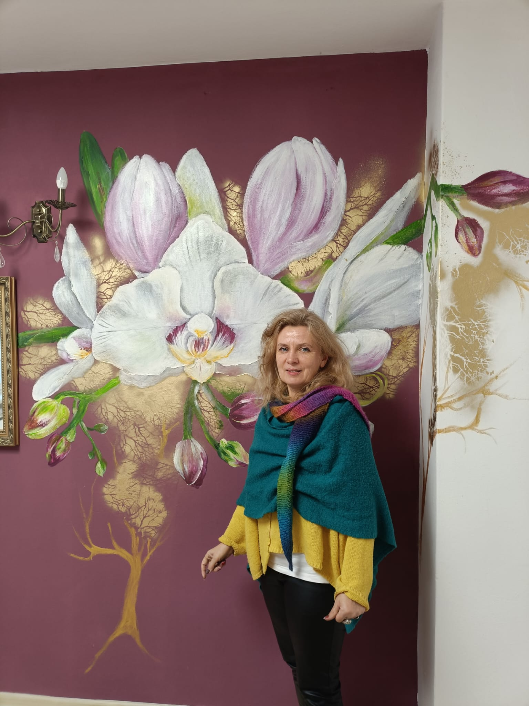

01
Mural we wnętrzu
Orchidee — ściana zamieniona w ogród
Projekt dopasowany do koloru wnętrza i naturalnego światła. Od pierwszego szkicu po wielkoformatowe kwiaty malowane bezpośrednio na ścianie.
- indywidualna kompozycja
- malowanie ręczne
- projekt dopasowany do wnętrza